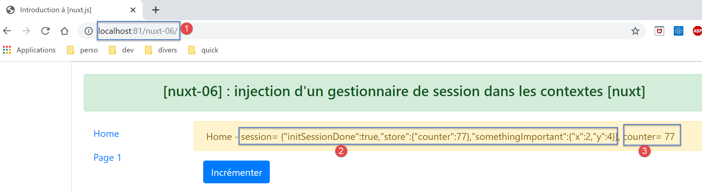
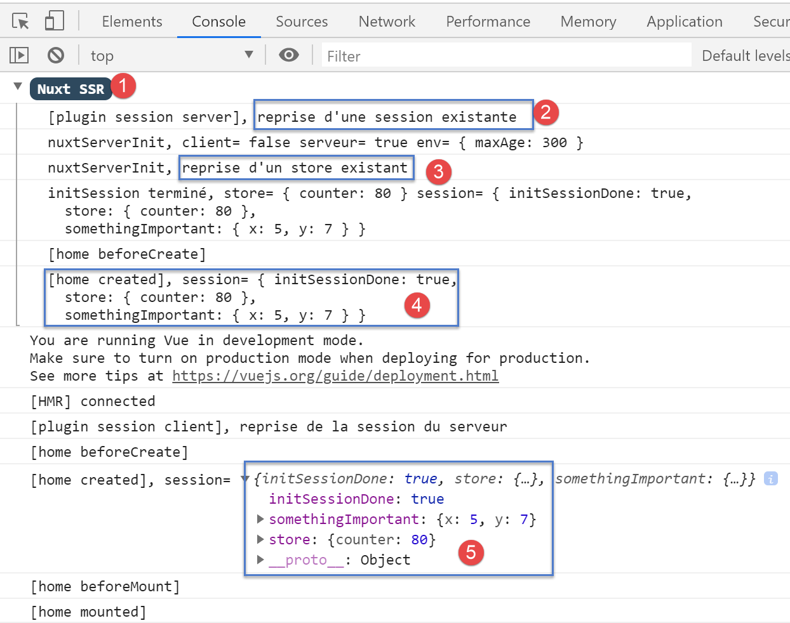
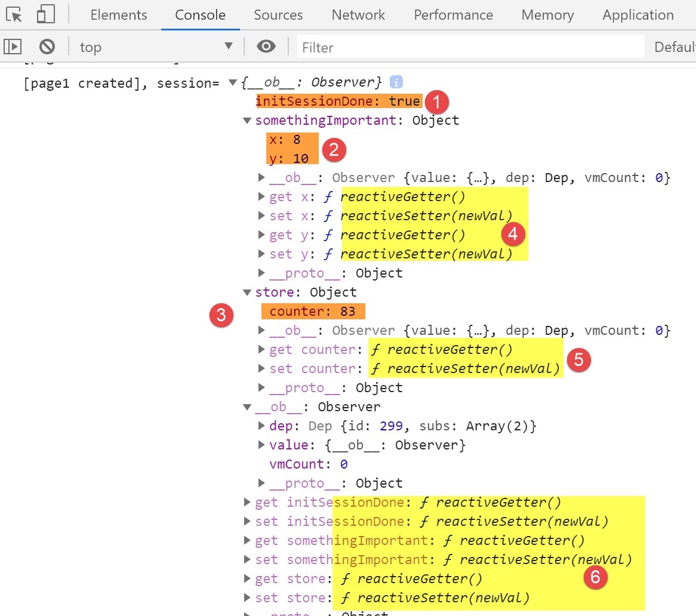
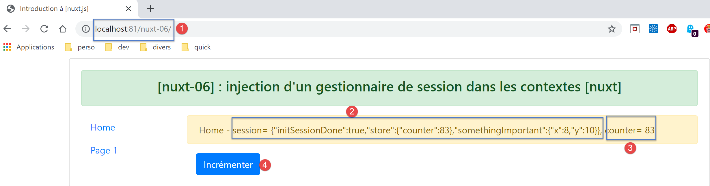
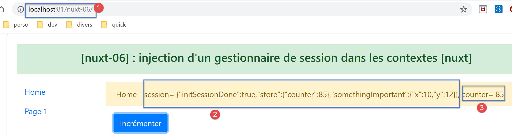
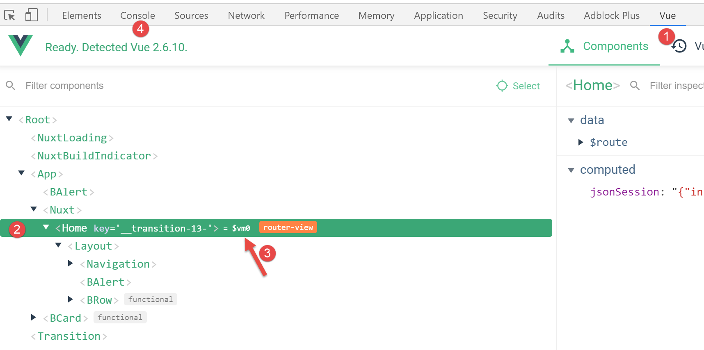
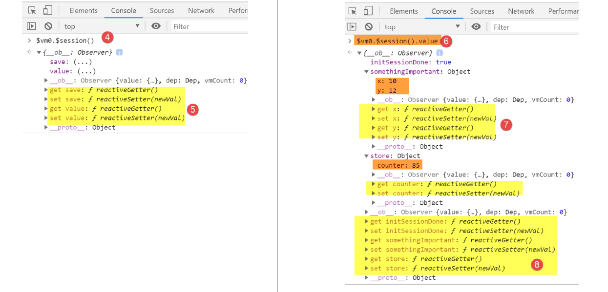

9. مثال [nuxt-06]: الحقن في سياق مدير الجلسة
9.1. نظرة عامة
أظهر المثال [nuxt-05] أنه يمكن الاحتفاظ بالمخزن حتى عندما يفرض المستخدم إجراء استدعاءات للخادم. عناصر المخزن تفاعلية، لذا إذا تم دمجها في طرق العرض، فإن طرق العرض هذه تتفاعل مع التغييرات في المخزن. قد ترغب أيضًا في الاحتفاظ بالعناصر طوال عمليات التبادل بين العميل والخادم دون أن تكون تفاعلية، لمجرد أنها لا يتم عرضها بواسطة طرق العرض. يمكنك بعد ذلك تخزينها في الجلسة دون أن تكون موجودة في المخزن.
يمكن الوصول إلى المخزن بسهولة من خلال خصائص مثل [context.app.$store] خارج العروض أو [this.$store] داخل العروض. نرغب في شيء مشابه للجلسة، مثل [context.app.$session] أو [this.$session]. سنرى أن هذا ممكن بفضل مفهوم الحقن. ومع ذلك، لا يمكننا حقن كائنات في السياق، بل وظائف فقط. ستتوفر هذه الوظيفة بعد ذلك عبر التعبيرات [context.app.$session()] أو [this.$session()].
أخيرًا، سنقدم مفهوم [nuxt] الخاص بـ [plugin].
يتم إنشاء المثال [nuxt-06] مبدئيًا عن طريق استنساخ مشروع [nuxt-05]:

- في [1]، سنضيف مجلد [plugins]؛
9.2. مفهوم المكون الإضافي [nuxt]
يشير [nuxt] إلى [plugin] على أنه أي كود يتم تنفيذه عند بدء تشغيل التطبيق، حتى قبل أن يتم تنفيذ دالة [nuxtServerInit] بواسطة الخادم، والتي كانت حتى الآن أول دالة مستخدم يتم تنفيذها. يجب الإعلان عن مكونات التطبيق الإضافية في مفتاح [plugins] بملف التكوين [nuxt.config.js]:
/*
** Plugins to load before mounting the App
*/
plugins: [
{ src: '~/plugins/client/session', mode: 'client' },
{ src: '~/plugins/server/session', mode: 'server' }
],
- السطران 5-6: يتم تحديد المكون الإضافي من خلال مساره [src] ووضع تنفيذه [mode]. يمكن أن يكون لـ [mode] ثلاث قيم:
- [client]: يجب تنفيذ المكون الإضافي على جانب العميل فقط؛
- [server]: يجب تنفيذ المكون الإضافي على جانب الخادم فقط؛
- مفتاح [mode] مفقود: في هذه الحالة، يجب تنفيذ المكون الإضافي على جانبي العميل والخادم؛
- السطران 5-6: لقد وضعنا المكونين الإضافيين في مجلد [plugins]. هذا ليس ضروريًا. يمكن وضع المكونات الإضافية في أي مكان في بنية دليل المشروع. وبالمثل، فإن أسماء المجلدات الفرعية [client، server] اختيارية هنا؛

9.3. المكوّن الإضافي [session] للخادم
المكوّن الإضافي [server / session.js] هو كما يلي:
/* eslint-disable no-console */
export default (context, inject) => {
// server session management
// is there an existing session?
let value = context.app.$cookies.get('session')
if (!value) {
// new session
console.log("[plugin session server], démarrage d'une nouvelle session")
value = initValue
} else {
// existing session
console.log("[plugin session server], reprise d'une session existante")
}
// session definition
const session = {
// session content
value,
// save the session in a cookie
save(context) {
context.app.$cookies.set('session', this.value, { path: context.base, maxAge: context.env.maxAge })
}
}
// we inject a function into [context, Vue] that will render the current session
inject('session', () => session)
}
// initial session value
const initValue = {
initSessionDone: false
}
- السطر 2: يتم تنفيذ المكونات الإضافية في كل مرة يكون فيها طلب للخادم: عند بدء التشغيل وفي كل مرة يقوم فيها المستخدم بإجبار الخادم على إرسال طلب عن طريق إدخال عنوان URL يدويًا:
- أولاً، يتم تنفيذ المكونات الإضافية للخادم؛
- بمجرد أن يتلقى متصفح العميل استجابة الخادم، يحين دور المكون الإضافي (المكونات الإضافية) للعميل للتشغيل؛
- السطر 2: يتلقى كل مكون إضافي، سواء كان من جانب العميل أو الخادم، معلمتين:
- [context]: سياق الخادم أو العميل، اعتمادًا على أيهما يقوم بتنفيذ المكون الإضافي؛
- [inject]: دالة تسمح بإدخال دالة في سياق الخادم أو العميل؛
- الغرض من المكون الإضافي [server / session] مزدوج:
- تحديد جلسة (الأسطر 16–23)؛
- تحديد دالة [$session] داخل السياق تعيد الجلسة من السطر 16. يقوم السطر 25 بذلك؛
- الأسطر 16-23: ستقوم الجلسة بتغليف بياناتها في كائن [value] في السطر 18؛
- الأسطر 20-22: تحتوي على دالة [save] تأخذ كائن [context] كمعلمة. يوفر كود الاستدعاء هذا السياق. باستخدامه، تحفظ دالة [save] قيمة الجلسة، كائن [value]، في ملف تعريف ارتباط الجلسة؛
- السطر 6: عند تشغيل المكون الإضافي [server / session]، يتحقق أولاً مما إذا كان الخادم قد تلقى ملف تعريف ارتباط الجلسة؛
- إذا كان الأمر كذلك، فإن كائن [value] من السطر 6 يمثل قيمة الجلسة، وهي مجموعة البيانات المُغلفة بداخله؛
- وإذا لم يكن الأمر كذلك، في الأسطر 7-11، نقوم بتعيين القيمة الأولية للجلسة. سيكون هذا هو كائن [initValue] في الأسطر 29-31. سيتم تعريف عناصر الجلسة في دالة [nuxtServerInit]، التي يتم تنفيذها بعد المكون الإضافي للخادم؛
- السطر 18: الترميز [value] هو اختصار للترميز [value:value]. يمثل [value] على اليسار اسم مفتاح الكائن؛ ويمثل [value] على اليمين كائن [value] المعلن في السطر 6؛
- السطر 25: عند الوصول إلى هذا السطر، تكون الجلسة قد تم إنشاؤها لأنها لم تكن موجودة، أو تم استردادها من طلب HTTP لمتصفح العميل؛
- السطر 25: نقوم بإدخال دالة جديدة في سياق الخادم:
- المعلمة الأولى لـ [inject] هي اسم الدالة التي يتم إنشاؤها، وهي هنا "session". سيقوم [nuxt] فعليًا بتسميتها "$session"؛
- المعلمة الثانية هي تعريف الدالة. هنا، لن تقبل الدالة [$session]
- لن تقبل أي معلمات؛
- تُرجع كائن [session] من السطر 16؛
- بمجرد تنفيذ المكون الإضافي:
- تصبح الدالة [$session] متاحة في [context.app.$session] أينما كان كائن [context] متاحًا، أو في [this.$session] في طريقة عرض أو في مخزن [vuex]؛
- تُرجع الدالة [$session] كائن [session] بمفتاح [value] واحد؛
- عند إنشاء الجلسة الأولي، يحتوي كائن [value] على مفتاح واحد فقط [initStoreDone] (الأسطر 29–31). يشير المفتاح [initStoreDone:false] إلى أن المخزن لم يُضاف بعد إلى الجلسة. سيتم ذلك بواسطة الدالة [nuxtServerInit]؛
9.4. تهيئة الجلسة
بمجرد تنفيذ المكون الإضافي [session / server] بواسطة الخادم، سيقوم الخادم بتنفيذ البرنامج النصي [store / index.js] التالي:
/* eslint-disable no-console */
export const state = () => ({
// meter
counter: 0
})
export const mutations = {
// increment counter by one [inc] value
increment(state, inc) {
state.counter += inc
},
// state replacement
replace(state, newState) {
for (const attr in newState) {
state[attr] = newState[attr]
}
}
}
export const actions = {
async nuxtServerInit(store, context) {
// who executes this code?
console.log('nuxtServerInit, client=', process.client, 'serveur=', process.server, 'env=', context.env)
// waiting for a promise to be fulfilled
await new Promise(function(resolve, reject) {
// this is normally an asynchronous function
// we simulate it with a one-second wait
setTimeout(() => {
// init session
initSession(store, context)
// success
resolve()
}, 1000)
})
}
}
function initSession(store, context) {
// store is the blind to be initialized
// retrieve the session
const session = context.app.$session()
// has the session already been initiated?
if (!session.value.initSessionDone) {
// start a new blind
console.log("nuxtServerInit, initialisation d'une nouvelle session")
// initialize the blind
store.commit('increment', 77)
// put the blind in the session
session.value.store = store.state
// initialize a new session
session.value.somethingImportant = { x: 2, y: 4 }
// the session is now initialized
session.value.initSessionDone = true
} else {
console.log("nuxtServerInit, reprise d'un store existant")
// update the store with the session store
store.commit('replace', session.value.store)
}
// save the session
session.save(context)
// log
console.log('initSession terminé, store=', store.state, 'session=', session.value)
}
بالمقارنة مع المخزن في مشروع [nuxt-05]، لم يتغير سوى دالة [initSession] (المعروفة سابقًا باسم initStore) في الأسطر 38–60:
- السطر 42: نسترد الجلسة باستخدام دالة [$session]، التي تم إدخالها في سياق الخادم؛
- السطر 44: نتحقق مما إذا كانت الجلسة قد تم تهيئتها بالفعل؛
- الأسطر 45–54: إذا لم تكن كذلك:
- السطر 48: يتم تهيئة المخزن؛
- السطر 50: يتم وضع حالة المخزن في الجلسة؛
- السطر 52: نضيف كائنًا آخر [somethingImportant] إلى الجلسة. لن يكون هذا الكائن جزءًا من المخزن؛
- السطر 54: نلاحظ أن الجلسة قد تم تهيئتها الآن؛
- الأسطر 55-59: إذا كانت الجلسة قد تم تهيئتها بالفعل:
- السطر 58: يتم تهيئة المخزن الجديد بمحتويات الجلسة؛
- السطر 61: يتم حفظ الجلسة في ملف تعريف الارتباط الخاص بالجلسة. لاحظ أن هذا يتضمن وضع ملف تعريف الارتباط في استجابة HTTP التي سيرسلها الخادم إلى متصفح العميل؛
9.5. المكوّن الإضافي [client / session] الخاص بالعميل
بمجرد أن يقوم الخادم بتنفيذ البرامج النصية [plugins / server / session] و [store / index]، سيرسل إحدى الصفحات [index، page1] إلى متصفح العميل. ستتضمن استجابة HTTP للخادم ملف تعريف ارتباط الجلسة. بمجرد استلام الصفحة بواسطة متصفح العميل، سيتم تنفيذ البرامج النصية من جانب العميل المضمنة في الصفحة. سيتم بعد ذلك تنفيذ المكون الإضافي [client / session]:
/* eslint-disable no-console */
export default (context, inject) => {
// customer session management
// the session necessarily exists, initialized by the server
console.log('[plugin session client], reprise de la session du serveur')
// session definition
const session = {
// session content
value: context.app.$cookies.get('session'),
// save the session in a cookie
save(context) {
context.app.$cookies.set('session', this.value, { path: context.base, maxAge: context.env.maxAge })
}
}
// we inject a function into [context, Vue] that will render the current session
inject('session', () => session)
}
- عندما يتم تشغيل المكون الإضافي للعميل، يكون ملف تعريف الارتباط الخاص بالجلسة قد تم استلامه بالفعل بواسطة متصفح العميل؛
- الهدف من المكون الإضافي [client] هو أيضًا إدخال دالة [$session] في سياق العميل. ستُرجع هذه الدالة الجلسة التي أرسلها الخادم؛
- السطر 19: ستُرجع الدالة المُدرجة [$session] الجلسة من الأسطر 9–16؛
- الأسطر 9–16: كائن [session] الذي يديره العميل. سيكون هذا نسخة من الجلسة المرسلة من الخادم؛
- السطر 11: يتم استرداد قيمة جلسة عمل العميل من ملف تعريف ارتباط الجلسة الذي أرسله خادم [nuxt]؛
- الأسطر 13-15: كما هو الحال مع جلسة عمل الخادم، تحتوي جلسة عمل العميل على دالة [save] تسمح بحفظ قيمة الجلسة، [this.value] في السطر 14، في ملف تعريف ارتباط الجلسة المخزن في المتصفح؛
9.6. صفحة [index]
تتطور صفحة [index] على النحو التالي:
<!-- page [index] -->
<template>
<Layout :left="true" :right="true">
<!-- navigation -->
<Navigation slot="left" />
<!-- message-->
<template slot="right">
<b-alert show variant="warning"> Home - session= {{ jsonSession }}, counter= {{ $store.state.counter }} </b-alert>
<!-- bouton -->
<b-button @click="incrementCounter" class="ml-3" variant="primary">Incrémenter</b-button>
</template>
</Layout>
</template>
<script>
/* eslint-disable no-undef */
/* eslint-disable no-console */
/* eslint-disable nuxt/no-env-in-hooks */
import Layout from '@/components/layout'
import Navigation from '@/components/navigation'
export default {
name: 'Home',
// components used
components: {
Layout,
Navigation
},
computed: {
jsonSession() {
return JSON.stringify(this.$session().value)
}
},
// life cycle
beforeCreate() {
// client and server
console.log('[home beforeCreate]')
},
created() {
// client and server
console.log('[home created], session=', this.$session().value)
},
beforeMount() {
// customer only
console.log('[home beforeMount]')
},
mounted() {
// customer only
console.log('[home mounted]')
},
// event management
methods: {
incrementCounter() {
console.log('incrementCounter')
// counter increment of 1
this.$store.commit('increment', 1)
// session modification
const session = this.$session()
session.value.store = this.$store.state
session.value.somethingImportant.x++
session.value.somethingImportant.y++
// save session in session cookie
session.save(this.$nuxt.context)
}
}
}
</script>
ضع في اعتبارك أن هذه الصفحة تعمل على كل من الخادم والعميل.
- السطر 8: نعرض الآن كل من الجلسة والمتجر؛
- السطر 30: [jsonSession] هي خاصية محسوبة تُرجع سلسلة JSON لقيمة الجلسة؛
- السطر 41: نعرض قيمة الجلسة باستخدام الدالة المُدرجة [this.$session]. وهي موجودة في سياقي الخادم والعميل؛
- السطر 53: يتم تنفيذ طريقة [incrementCounter] على جانب العميل فقط؛
- السطر 56: يتم زيادة عداد التعمية وعرضه كما في السابق؛
- السطر 58: يتم استرداد الجلسة باستخدام الدالة المُحقنة [this.$session]؛
- السطر 59: يتم تحديث مخزن الجلسة؛
- السطران 60-61: نقوم بزيادة سمات الجلسة [somethingImportant.x، somethingImportant.y]. هذا فقط لإظهار أنه يمكن استخدام الجلسة لنقل بيانات بخلاف المخزن؛
- السطر 63: يتم حفظ الجلسة في ملف تعريف ارتباط الجلسة المخزن في المتصفح. من وجهة نظر العميل، يتوفر سياق الجلسة في [this.$nuxt.context]؛
الغرض من صفحة [index] هو إظهار أن الجلسة ليست تفاعلية، في حين أن المخزن تفاعلي. عندما نقوم بزيادة عناصر الجلسة، سنرى أن العرض لا يتم تحديثه. يقدم عرض [page1] حلاً لهذه المشكلة.
9.7. صفحة [page1]
يتم إنشاء صفحة [page1] عن طريق نسخ صفحة [index] ثم تعديلها قليلاً:
<!-- page [index] -->
<template>
<Layout :left="true" :right="true">
<!-- navigation -->
<Navigation slot="left" />
<!-- message-->
<template slot="right">
<b-alert show variant="warning"> Page1 - session= {{ jsonSession }}, counter= {{ $store.state.counter }} </b-alert>
<!-- bouton -->
<b-button @click="incrementCounter" class="ml-3" variant="primary">Incrémenter</b-button>
</template>
</Layout>
</template>
<script>
/* eslint-disable no-undef */
/* eslint-disable no-console */
/* eslint-disable nuxt/no-env-in-hooks */
import Layout from '@/components/layout'
import Navigation from '@/components/navigation'
export default {
name: 'Page1',
// components used
components: {
Layout,
Navigation
},
data() {
return {
session: {}
}
},
computed: {
jsonSession() {
return JSON.stringify(this.session.value)
}
},
// life cycle
beforeCreate() {
// client and server
console.log('[page1 beforeCreate]')
},
created() {
// client and server
// set the session in the page's reactive properties
this.session = this.$session()
// log
console.log('[page1 created], session=', this.session.value)
},
beforeMount() {
// customer only
console.log('[page1 beforeMount]')
},
mounted() {
// customer only
console.log('[page1 mounted]')
},
// event management
methods: {
incrementCounter() {
console.log('incrementCounter')
// counter increment of 1
this.$store.commit('increment', 1)
// session modification
this.session.value.store = this.$store.state
this.session.value.somethingImportant.x++
this.session.value.somethingImportant.y++
// save session in session cookie
this.session.save(this.$nuxt.context)
}
}
}
</script>
- السطر 47: الفرق الرئيسي هو أننا نضيف الجلسة الحالية إلى خصائص الصفحة (الأسطر 29–33). سيجعل هذا الجلسة تفاعلية. عندما تقوم الدالة [incrementCounter] بزيادة عناصر الجلسة، سيتم تحديث عرض [page1]؛
9.8. تشغيل المشروع
قبل تشغيل المشروع، تحقق من ملف تعريف ارتباط الجلسة في متصفحك، وإذا كان موجودًا، فاحذفه حتى يقوم الخادم بإنشاء جلسة جديدة:

الآن دعونا نطلب عنوان URL [http://localhost:81/nuxt-06/]:

تكون سجلات المتصفح كما يلي:

- في [2]، يبدأ الخادم جلسة جديدة في المكون الإضافي [session] الخاص بالخادم؛
- في [3]، يتم تهيئة هذه الجلسة الجديدة في [nuxtServerInit]؛
- في [4]، الجلسة الجديدة كما هي معروفة على الخادم؛
- في [5]، نجح العميل في استرداد هذه الجلسة؛
الآن دعونا نزيد العداد ثلاث مرات:

- في [3]، تمت زيادة العداد ولكن لم تتم زيادة الجلسة في [2]. بينما يعرض [3] المخزن، وهو تفاعلي، يعرض [2] الجلسة، وهي غير تفاعلية:
الآن دعونا نعيد تحميل الصفحة (F5). السجلات هي كما يلي بعد إعادة التحميل هذه:

- في [2]، نرى أن الخادم تلقى ملف تعريف ارتباط جلسة أرسله متصفح العميل؛
- في [4]، نرى أن المخزن لم تتم إعادة تعيينه بل تم نقله من الجلسة المستلمة؛
- في [4-5]: نرى أن سمات الجلسة قد تمت زيادتها بالفعل ثلاث مرات؛
ثم تكون الصفحة المرسلة من الخادم كما يلي؛

الاستنتاج المستخلص من هذه الصفحة هو أن الجلسة يمكن أن تحمل عناصر أخرى غير المخزن، ولكن هذه العناصر ليست تفاعلية.
الآن، لنضغط على رابط [الصفحة 1] [4]. وتظهر الصفحة الجديدة على النحو التالي:

ثم لنستخدم زر [Increment] ثلاث مرات. تصبح الصفحة كما يلي:

هذه المرة، يتم عرض الجلسة بشكل صحيح في [2]. وهي تفاعلية هنا. ويمكن ملاحظة ذلك في السجلات:

- في [1-3]، قيم الجلسة؛
- في [4-6]، أدوات الحصول والتعيين التفاعلية لعناصر الجلسة؛
الآن، لنضغط على رابط [الصفحة الرئيسية] [4]. سنحصل على الصفحة التالية:

ثم انقر على زر [Increment] [4] مرتين. تتغير الصفحة إلى ما يلي:

يمكننا أن نرى هنا أيضًا أن الجلسة أصبحت تفاعلية [2].
دعونا نسترد القيمة التي تعيدها الدالة [this.$session()]:

- في علامة التبويب [View]، حدد الصفحة الحالية [Home] للحصول على مرجعها [$vm0] [3]؛
ثم، في علامة التبويب [Console] [4]، دعونا نسترجع قيمة الدالة [$vm0.$session()]:

- في [5]، نرى أن الجلسة أصبحت تفاعلية، في حين أنها لم تكن كذلك في البداية؛
- في [6]، نطلب قيمة الجلسة؛
- في [7-8]، نكتشف أن هذه القيمة أصبحت تفاعلية أيضًا؛
لذلك لدينا هنا نتيجة غير متوقعة: إذا أصبح عنصر ما تفاعليًا في صفحة ما لأنه تم وضعه في خصائص الصفحة، فإنه يصبح تفاعليًا أيضًا في الصفحات التي لا يشكل فيها جزءًا من الخصائص.
9.9. الخلاصة
أظهر المثال [nuxt-05] أنه يمكننا الحفاظ على المخزن عبر الطلبات المرسلة إلى الخادم. المثال [nuxt-06] يفعل الشيء نفسه مع كائن أطلقنا عليه اسم [session] قياسًا على جلسة الويب. رأينا أن هذه الجلسة يمكن أن يكون لها نفس خصائص مخزن [Vuex] وتصبح تفاعلية أيضًا، على الرغم من أنها لم تكن كذلك في الأصل.
إذن ما هي فائدة مخزن [Vuex]؟ يجب أن أعترف أنه، في الوقت الحالي، لم يتضح لي ذلك. من المحتمل أنني فاتني شيء ما. لذا، في حالة الشك، أوصي باستخدام:
- مخزن [Vuex] لتخزين كل ما يحتاج إلى مشاركته بين الصفحات من جانب العميل، وأي شيء قد يحتاج إلى مشاركته بين العميل والخادم؛
- ملف تعريف ارتباط للجلسة إذا كان من الضروري الحفاظ على المتجر أثناء طلب من العميل إلى الخادم، بحيث تحتوي الجلسة على المتجر فقط؛
كان الهدف من الأمثلة [nuxt-05] و [nuxt-06] هو إظهار كيفية ضمان استمرارية التطبيق عندما يفرض المستخدم إجراء اتصال بالخادم عن طريق كتابة عناوين URL يدويًا. لاحظ أن السلوك الافتراضي في هذه الحالة هو إعادة تشغيل التطبيق، مما يؤدي إلى فقدان حالته الحالية.